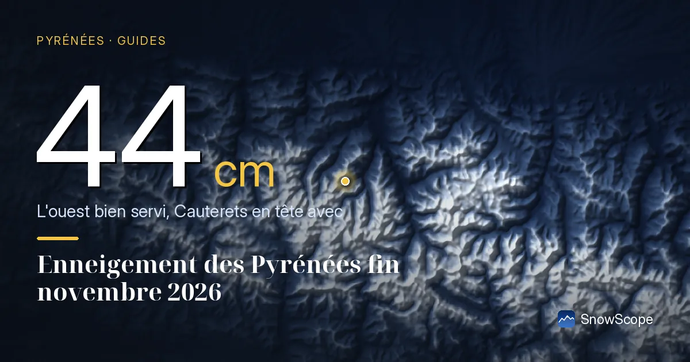

Enneigement des Pyrénées fin novembre 2026 : l'ouest bien servi, Cauterets en tête avec 44 cm
Les Pyrénées finissent novembre 2026 avec un enneigement au-dessus de la normale à l'ouest et plus maigre à l'est : Cauterets a 44 cm en haut des pistes, Formigal 36 cm, alors que La Molina, en Cerdagne, n'en compte que 8 cm. La neige de mercredi et jeudi a surtout profité aux massifs proches de l'Atlantique.
Consultez les prévisions neige en temps réel pour Pyrénées sur l'application SnowScopeHauteurs de neige, alertes poudreuse et carte 3D, gratuitement.
De l'Atlantique à la Méditerranée : un gradient très net
Les deux jours de neige de la semaine ont apporté 36 cm à Cauterets, 34 cm à Formigal, 28 cm à Piau-Engaly et 27 cm à Saint-Lary. Plus à l'est, la perturbation s'est essoufflée : 15 cm à Grandvalira, 8 cm à Font-Romeu, 5 cm à La Molina.
C'est le schéma classique d'un flux d'ouest : les premiers reliefs rencontrés, en Béarn, en Bigorre et en Aragon, prennent l'essentiel de la neige, et l'air arrive plus sec en Andorre et en Catalogne.
| Station | Neige en haut | Neige 3 jours | Mi-pente : auj. / normale | Habituel le 25 déc. |
|---|---|---|---|---|
| Cauterets | 44 cm | 36 cm | 24 cm / 16 cm | 43 cm |
| Formigal | 36 cm | 34 cm | 19 cm / 14 cm | 39 cm |
| Piau-Engaly | 28 cm | 28 cm | 16 cm / 13 cm | 40 cm |
| Saint-Lary | 28 cm | 27 cm | 17 cm / 10 cm | 29 cm |
| Baqueira-Beret | 21 cm | 23 cm | 13 cm / 8 cm | 26 cm |
| Ordino-Arcalís | 20 cm | 20 cm | 12 cm / 13 cm | 42 cm |
| Peyragudes | 16 cm | 21 cm | 7 cm / 8 cm | 17 cm |
| Font-Romeu | 16 cm | 8 cm | 2 cm / 5 cm | 16 cm |
| Grandvalira | 14 cm | 15 cm | 7 cm / 8 cm | 33 cm |
| La Molina | 8 cm | 5 cm | 0 cm / 7 cm | 23 cm |
Comparé à une fin novembre normale
À mi-pente, presque toutes les stations de l'ouest sont au-dessus de leur valeur habituelle pour la date. Cauterets a 24 cm à 2 072 m contre 16 cm d'ordinaire, Formigal 19 cm contre 14 cm, Baqueira 13 cm contre 8 cm. À l'est, La Molina est en dessous avec 0 cm, et Font-Romeu proche de la normale.
Il faut garder en tête que la fin novembre est souvent maigre dans les Pyrénées : les valeurs habituelles sont basses, et quelques dizaines de centimètres suffisent à prendre de l'avance.
Les prochains jours
Le week-end des 28 et 29 novembre est sec et froid, avec au mieux quelques centimètres dimanche sur les crêtes de l'ouest. Lundi 30 novembre, rien de significatif n'est attendu. Sur sept jours, la prévision reste faible partout, autour de 2 cm au sommet de Cauterets.
Le froid est une bonne nouvelle : il conserve la neige tombée et permet aux stations de produire de la neige de culture la nuit avant les ouvertures de début décembre.
Ce que disent 46 hivers pour Noël
Le 25 décembre, la hauteur habituelle à mi-pente est de 43 cm à Cauterets, 39 cm à Formigal, 40 cm à Piau-Engaly et 42 cm à Ordino-Arcalís. À l'est, elle tombe à 33 cm à Grandvalira et 23 cm à La Molina.
Une couche de 50 cm au 1er janvier n'est atteinte que dans 46 % des hivers à Formigal, 43 % à Piau-Engaly, 39 % à Grandvalira et 11 % à La Molina. Les Pyrénées restent un massif où la neige de culture fait les fêtes ; une bonne fin novembre comme celle-ci donne une base sur laquelle elle tient mieux.
Où aller début décembre
À l'ouest, Cauterets, Piau-Engaly et Formigal ont la meilleure neige naturelle. Baqueira-Beret est la valeur sûre du Val d'Aran. En Andorre, Ordino-Arcalís, plus haute et plus à l'ouest que Grandvalira, a mieux profité de la neige cette semaine.
Pour les vacances de Noël
La semaine du 19 au 26 décembre et celle du Nouvel An sont les plus chargées de l'hiver dans les Pyrénées françaises. Avec une base naturelle déjà correcte à l'ouest, les stations de Bigorre et du Béarn partent avec un avantage cette année ; les stations catalanes dépendront davantage de décembre.
Les routes d'accès aux stations sont soumises aux équipements spéciaux en hiver : pneus neige ou chaînes dans le coffre.
Conseils aux skieurs
- Ce week-end, privilégiez les stations de l'ouest : Cauterets, Piau-Engaly, Formigal.
- Pour Noël, réservez dans une station haute ou bien équipée en neige de culture.
- Le matin, les pistes sont dures après les nuits froides : attendez le soleil sur les pentes exposées.
- Plus de chiffres sur la page Pyrénées et notre guide de Piau-Engaly.
À propos de ces chiffres
Chiffres de neige : la carte et la prévision SnowScope du jour, et notre historique de 46 hivers passés pour chaque station (une estimation pour la zone, pas le bulletin de la station).
Citer ce bulletin
Pour la recherche, l'enseignement ou la presse : chiffres et graphiques réutilisables librement sous CC BY 4.0 avec cette citation.
SnowScope (2026), Enneigement des Pyrénées fin novembre 2026 : l'ouest bien servi, Cauterets en tête avec 44 cm, https://snowscope.app/blog/fr/2026/11/enneigement-pyrenees-fin-novembre-2026-station-par-station-ouest-est.html, consulté le 2026-11-27
SnowScope (Atlas Labs). (2026, November 27). Enneigement des Pyrénées fin novembre 2026 : l'ouest bien servi, Cauterets en tête avec 44 cm. SnowScope snow reports. https://snowscope.app/blog/fr/2026/11/enneigement-pyrenees-fin-novembre-2026-station-par-station-ouest-est.html
BibTeX
@misc{snowscope2026enneigementpyreneesfinno,
author = {{SnowScope (Atlas Labs)}},
title = {Enneigement des Pyrénées fin novembre 2026 : l'ouest bien servi, Cauterets en tête avec 44 cm},
year = {2026},
month = nov,
howpublished = {\url{https://snowscope.app/blog/fr/2026/11/enneigement-pyrenees-fin-novembre-2026-station-par-station-ouest-est.html}},
note = {Published 2026-11-27 16:37 UTC; accessed 2026-11-27}
}· CC BY 4.0 · Méthodes, données et outils →
Suivre Pyrénées
Gratuit : un message quand la neige arrive, et la météo chaque matin.